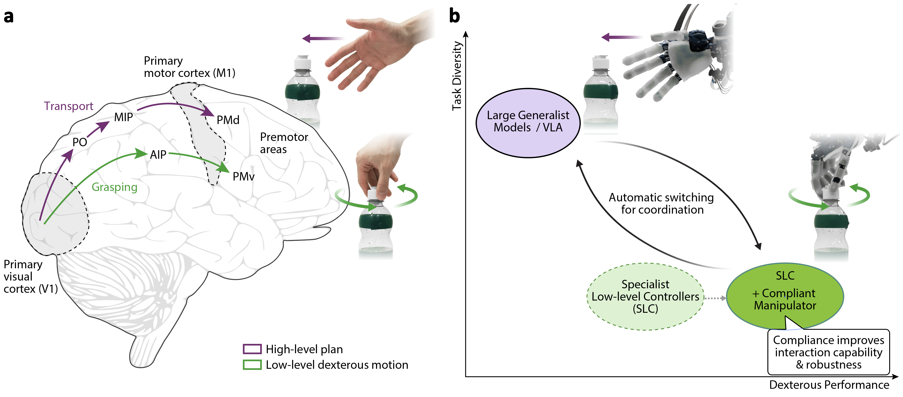
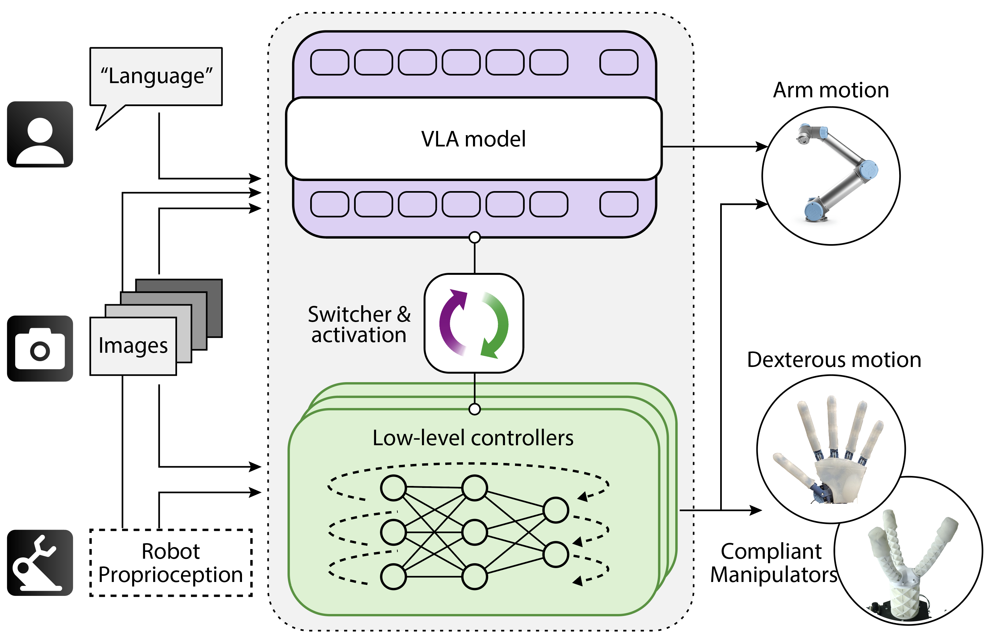
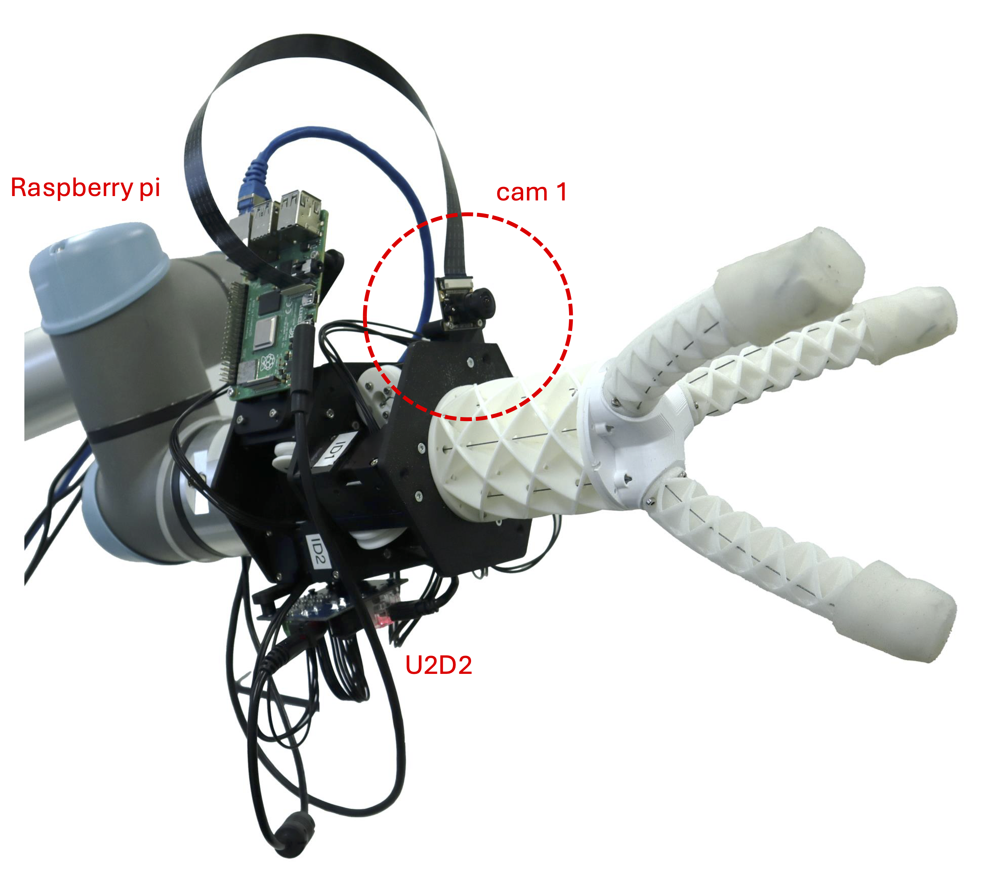

Teleoperation

Teleoperation of the anthropomorphic robot hand for demonstration data collection.
Human dexterity arises from the combined high-level task reasoning which is paired with finger-level dexterity control and physical compliance at the muscle and skin layers.
For robots, we see large Vision-Language-Action (VLA) models demonstrating text-conditioned high-level planning for a diverse range of manipulation tasks, typically performed with pincher grippers. Smaller control policies developed through imitation learning are conversely showing success in more dexterous tasks using higher degree-of-freedom (DoF) grippers but for limited-scope tasks. However, there are limited approaches for combining high-level cognition and reasoning with dexterous and robust low-level control, which requires both intelligent control and compliant robot design. We propose a method inspired by the two-channel hypothesis of human motor control that combines these capabilities for dexterous manipulation, using a switching controller which integrates the best of high-level VLAs and smaller control models. The coordination between these two channels is managed through an event-driven switching mechanism which monitors the subtask progression and completion, requiring only minimal demonstrations data by fine-tuning the VLA to predict event signals and training lightweight subtask-level dexterous policies. This approach is applied to our custom compliant 13-DoF anthropomorphic dexterous robotic hand where we can modulate the compliance to systematically evaluate its impact on dexterity and robustness when combined with an autonomous policy. With this, we show that only through the inclusion of hardware-level compliance in robotic fingers, which enables passive adaptation to disturbances and improves contact stability, can we mimic the robustness of human-like physical adaptation to tasks. Specifically, the stability of finger-object contact is improved by over 38% through the introduction of compliance.
The full methodology is validated across a range of language-conditioned dexterous tasks. To demonstrate the advantages of modularity, we show that the adaptation to additional dexterous skills and different compliant hands can be achieved without retraining the large VLA model. This provides an efficient, scalable, and cross-embodiment approach to dexterity that actively leverages and exploits compliance whilst still leveraging the advantages of large AI models.

Switching-based dual-channel control for dexterous manipulation. (a), Two-channel hypothesis in neuroscience: human manipulation motion commands are generated by two neural pathways. The reaching channel (purple) governs arm transport, while the grasping channel (green) enables dexterous motion. (b), Combining the complementary strengths of large generalist models (VLA) and specialized low-level dexterous controllers, enhanced robustness through compliance.

Bio-inspired dual-channel control pipeline, an event signal is used to switch between models.
Teleoperation of the anthropomorphic robot hand for demonstration data collection.


Manipulator Hardware.